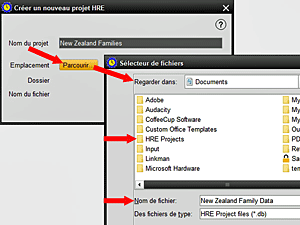

Cet écran vous permet de créer un nouveau projet, de définir son nom et son nom de fichier, et de désigner l'emplacement où les fichiers de la base de données doivent être stockés. Notez que cela ne doit PAS être utilisé pour importer un ensemble de données TMG. Le processus Importer de TMG est sélectionné séparément dans le menu OUTILS. La sélection de Créer un projet dans le menu Projet fournit une procédure en trois étapes à suivre: 1. Donnez un nom à votre projet pour l'identifier à l'avenir. Celui-ci doit être descriptif et peut être comprendre plusieurs mots, mais doit être unique 2. Cliquez sur PARCOURIR pour choisir où la base de données doit être stockée. Un emplacement par défaut sera présenté mais vous pouvez en choisir un autre si nécessaire 3. Une fois que l'emplacement du fichier est sélectionné, donnez à votre projet un nom de fichier concis, qui doit être différent de tout autre fichier de projet HRE stocké à cet emplacement. Les conventions Windows / MAC concernant les caractères que vous pouvez utiliser dans les noms de fichiers doivent être respectées et HRE ajoutera automatiquement le suffix de fichier .mv.db. Appuyer sur SÉLECTIONNER. Maintenant, la fenêtre sera complète montrant votre nouveau nom de projet, nom de fichier et l'emplacement. À ce stade, vous pouvez choisir d'annuler ou de créer le nouveau projet. Si vous avez maintenant crée le projet, il sera alors initialisé, ouvert et rendu ACTIF. Une fenêtre apparaîtra pour signifier que le processus est terminé. Vous pouvez maintenant commencer à entrer des données dans le nouveau projet, ou choisir de passer à un autre projet ouvert pour être Actif, ou Ouvrir un autre projet. |
|
Sujets Relatifs |